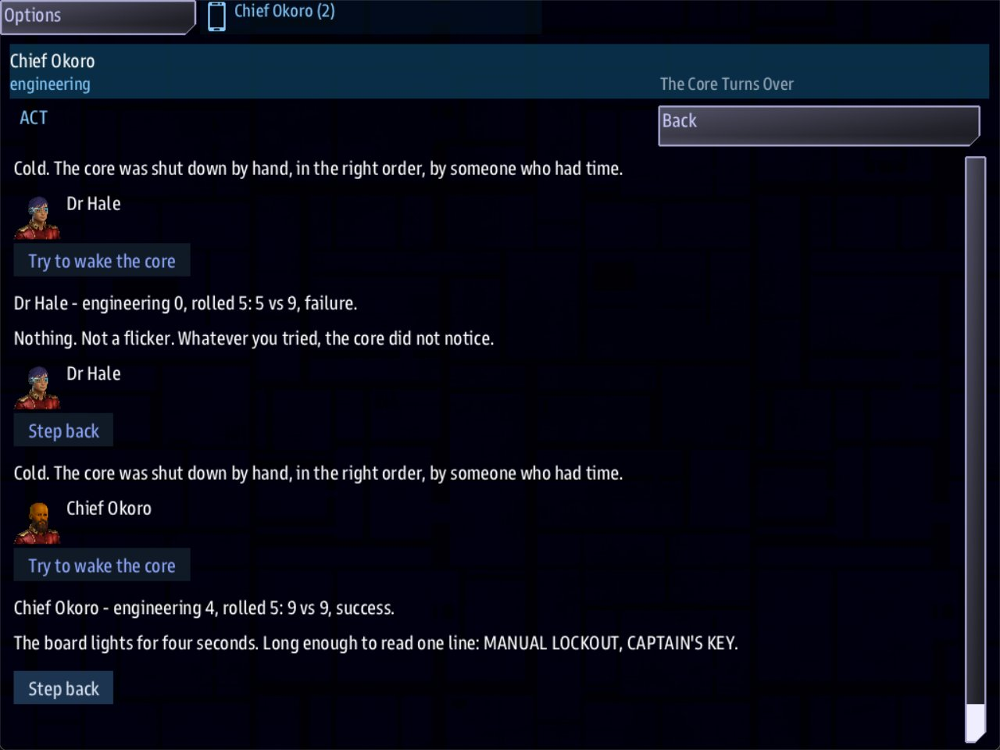

Class 3, Lecture 4 - Crew and skills¶
What you will have at the end¶
Your crew are good at different things, and the hulk notices. The surgeon turns out to be the only one who can read the sensor record, and it has nothing to do with her job. Anyone may try to wake the reactor, but the chief is three times as likely to manage it, and the page shows the roll.

Chief Okoro's handheld in the reactor room: Dr Hale's roll (engineering 0, a failure) and then his (engineering 4, a success), each roll line just above the line it led to.You will add two lines to your crew roster and two choices to your rooms in mission.amd.
You will not touch story.mast.
The video¶
About 5 minutes. Subtitles are available in the player.
Before you start¶
- Your mission from Lecture 3: the crew roster, the rooms, the two readings and the log.
sbs lint MyBoardingsaysclean.- Three consoles if you can manage it: Helm to fly, and Engineering and Science to go aboard.
Words for this lecture:
| Word | Meaning |
|---|---|
| Skill | How good one person is at one thing. A word and a number |
| Check | A try that may fail. The game rolls for it |
| Target | The number a check has to reach |
| Roll line | The line the page gains after a check, saying who rolled what |
Step 1 - Say what each person is good at¶
Open mission.amd and find your crew roster. Add one line to each person, under Roles::
### [Chief Okoro](okoro)
---
Console: engineering
Face: terran_male
Roles: engineering
Skills: engineering 4, science 1
---
### [Dr Hale](hale)
---
Console: science
Face: terran_female
Roles: medical
Skills: medical 4, science 3
---
A Skills: line is a list. Each entry is a word, a space and a number. Entries are
separated by commas.
| Part | What it means |
|---|---|
engineering |
The name of the skill. One word, no spaces. You may invent your own |
4 |
How good this person is at it. A whole number |
, |
Goes between two skills |
Capital letters do not matter in a skill's name. Science and science are the same
skill.
A scale that works well:
| Number | Read it as |
|---|---|
| not listed | Cannot do it. The game counts this as 0, unless it is their job |
| 1 | Has had the training |
| 2 | Does it for a living |
| 3 | Good |
| 4 | The best aboard |
A person's job counts as 2 even with no Skills: line. Chief Okoro has
Roles: engineering, so before today his engineering was 2. The Skills: line raises it
to 4.
Dr Hale's job is medical. Science is not her job. She is simply good at it. That is what
a skill is for.
Step 2 - Nothing to paste¶
The game reads Skills: with the rest of the roster. You have nothing to add to
story.mast.
The numbers belong to the person on the roster, not to the name on the console.
Step 3 - A choice for someone good enough¶
In The Bridge, add a choice below Answer the log:
Then add the room it leads to, below the bridge's last choice and above The Last Entry:
### [The Sensor Record](sensor_record)
% One contact, closing, eleven days before the core went cold. It never arrived. It is still out there.
- [Step back](bridge)
The condition has four parts.
| Part | What it means |
|---|---|
skill |
This condition asks about a skill, not a job |
science |
Which skill. The word from a Skills: line |
>= |
At least |
3 |
The number to reach |
Dr Hale has science 3, so she is offered this choice. Chief Okoro has science 1, and is not. You will see it on the bridge, on the Science console's handheld, in its Act app.
You now have three kinds of choice. They differ in who is offered them.
| You write | Who is offered it | If that person is not in the party |
|---|---|---|
if medical |
Someone whose job is medical |
One console covers for them |
if skill science >= 3 |
Someone whose science is 3 or more | Nobody is offered it |
no if at all |
Everyone | - |
Read the middle row twice. Nobody covers for a skill. With Dr Hale back on the ship, the sensor record is not on anyone's menu.
Step 4 - A choice anyone may try¶
In The Reactor Room, add a choice below Read the shutdown record:
Then add two rooms, below The Shutdown Record and above The Bridge:
### [The Core Turns Over](core_wakes)
% The board lights for four seconds. Long enough to read one line: MANUAL LOCKOUT, CAPTAIN'S KEY.
- [Step back](reactor)
### [The Board Stays Dark](core_dead)
% Nothing. Not a flicker. Whatever you tried, the core did not notice.
- [Step back](reactor)
There is no if on this choice, so everyone is offered it. What differs is how it turns
out.
| Part | What it means |
|---|---|
(core_wakes) |
The room the party goes to when it works |
check engineering 9 |
Roll for it. The game picks a number from 1 to 10 and adds this person's engineering. A total of 9 or more works |
else core_dead |
The room the party goes to when it does not work |
, learn lockout |
After a comma. This happens only when the check worked |
The number after the skill is the target. This table shows how often a check works.
| Target | Skill 0 | Skill 2 | Skill 4 |
|---|---|---|---|
| 6 | 5 times in 10 | 7 in 10 | 9 in 10 |
| 9 | 2 in 10 | 4 in 10 | 6 in 10 |
| 12 | never | 1 in 10 | 3 in 10 |
So Chief Okoro wakes the core 6 times in 10. Dr Hale, with no engineering at all, manages it 2 times in 10.
The page tells the crew what happened. After a try, everyone's page (the Act app on each handheld in the room) gains a line like this, and then the line of the room they landed in:
In a scene made of rooms, each person rolls alone. Nobody helps.
Step 5 - Four rules for skills¶
- A skill choice is a bonus, never the only way. Nobody covers for a skill, so a room
whose only way on is behind
if skillcan trap a short crew. Your log still opens at two facts, and there are four to find now, so any party can finish. - A check always has an
else, and both rooms lead back. Write the room for failure as carefully as the room for success. Half your players will read it. - What follows the check happens only on success.
; check engineering 9 else core_dead, learn lockoutteaches the fact only when the core wakes. - Skills belong to the seat's person. They are read from the roster, by the record's key.
A party may try a check again. The roll is for drama. It is not a lock.
Step 6 - Check it¶
Lint names nearly every mistake you can make here. Each row was tried on the finished file: one change, lint, and then every party walked through it.
| Mistake | What the game does | Lint says |
|---|---|---|
Skill: medical 4, science 3 (no s) |
Ignores the line. Dr Hale loses the sensor record | unknown-field |
Skills medical 4, science 3 (no colon) |
The same | fence-syntax, an error |
Skills: medical 4 science 3 (no comma) |
Loses both numbers | skills-shape |
Skills: medical: 4, science 3, medical=4, 4 medical or medical four |
Loses that one number. The science entry still counts | skills-shape |
Two Skills: lines on one person |
Uses the second line only | repeated-skills |
Skills: typed below the closing --- |
Ignores the line | field-below-fence |
| A person written with four hashes | Gives that seat a name from the game, and no skills | crew-member-level |
if skill science => 3 (the sign backwards) |
Offers the choice to nobody | unreadable-guard |
if skill science 3 (no sign) |
Offers the choice to nobody | skill-gate-shape |
if science >= 3 (the word skill left out) |
Offers the choice to nobody. science on its own is a job |
job-gate-never |
if skill sience >= 3 |
Offers the choice to nobody | unknown-skill |
; chek engineering 9 else core_dead |
Rolls nothing. The choice always works | unknown-outcome-verb |
check engineering else core_dead (no number), check engineering >= 9, or nine |
Rolls nothing. The choice always works, and mast.runtime.log gains a line each time it is picked |
check-shape |
check enginering 9 |
Rolls, with 0 for everyone | unknown-skill |
check engineering 9, else core_dead (a comma before else) |
A failed roll never reaches The Board Stays Dark | unknown-outcome-verb |
else core_ded (a room that does not exist) |
Ends the visit on a failed roll | check-else-missing |
| The room for success is not written | Ends the visit when the roll works | dangling-choice |
What lint cannot see. Each of these says clean:
| You wrote | What happens |
|---|---|
sience 3 on the ROSTER |
That person has a skill called sience, and no science. Dr Hale loses the sensor record. Lint cannot know which word you meant |
if skill science >= 5, and nobody has 5 |
Nobody is offered the choice |
check engineering 15, and the best aboard is 4 |
Nobody can pass it. The room for success is never read |
check engineering 9 with no else |
A failed roll never reaches The Board Stays Dark |
A second ; works the same as the comma: ; check engineering 9 else core_dead ; learn
lockout is fine.
Step 7 - Play it¶
- Fly inside 500 of the hulk. On Engineering and on Science, press the handheld icon, open Boarding Party and press BEAM DOWN.
- Go forward to the bridge. The Science console (Dr Hale) is offered Pull the sensor record. The Engineering console is not.
- Go back, then aft to the reactor. Both consoles are offered Try to wake the core.
- Let Dr Hale try. The page shows her roll, with
engineering 0in it. Most times she lands in The Board Stays Dark. - Step back. Let Chief Okoro try. This roll says
engineering 4. Either console's Step back takes the whole party, and both rolls stay on both pages.
Look at the number in the roll line. If the chief's line says engineering 2, the game is
not reading his Skills: line. Run lint: the line is misspelled, or its entry is.
With Engineering alone aboard: you are Chief Okoro. The suit tags come to you marked as covering, as the last button, as they did last time. The sensor record does not come to you at all. You can still try the core.
Nothing on the handheld shows a person their own skill numbers. The only number a player sees is in a roll line.
If something goes wrong¶
| What you see | Likely cause |
|---|---|
The chief's roll says engineering 2, not 4 |
His Skills: line is misspelled, or its engineering entry is. Lint names it |
| The surgeon is in the party and nobody is offered the sensor record | The skill word in the room is not the word on her Skills: line, or her number is lower than the room asks for |
A roll says 0 for someone who should be good |
The skill word after check is not the word on the roster. The roll line shows the word as you typed it |
| Trying the core always works, and no roll line appears | The check has no number, or the number is written as a word, or there is a sign in it. Lint warns, and mast.runtime.log has a line each time it is picked |
| A failed roll leads to the room for success | The check has no else, or there is a comma before else |
| A failed roll ends the visit and everyone is back at their station | The room named after else does not exist. Lint warns about it |
Exercise¶
In Lecture 2 you added a third person to your roster, at Helm, with a job of your choosing.
- Give that person a
Skills:line: their job at 3 or 4, and one other skill at 2. - In one room, add a choice only they are offered, using
if skilland their second skill. Write the short room it leads to, with a way back. - In another room, add a check with a target of 6 on a skill nobody has. Write both rooms. Play it and watch the rolls.
- Change the 6 to 12 and play again. With a skill of 0, it never works. Change it back.
- Break it on purpose: change
Skills:toSkill:on one person. Run lint and read the warning. Then play once anyway, and see what disappears from that person's menu and what their roll line says. Put thesback.
Checkpoint¶
You are done when all four are true:
sbs lint MyBoardingsaysclean.- With the surgeon in the party, Pull the sensor record is offered to her and to nobody else.
- When the chief tries the core, the roll line says
engineering 4. - A try at the core leads to one of two rooms, and each has a way back to the reactor.
Next¶
Lecture 5 gives one person a quest of their own: something only they are asked to do, and somewhere it leads.
Further reading¶
Nothing here is needed for Lecture 5.
- "Crew rosters" in the library documentation:
Roles:,Skills:,Names:, and who a console is. - "Boarding parties" in the library documentation:
skillandcheck.
Download this lecture's finished files (a zip of its example folder).